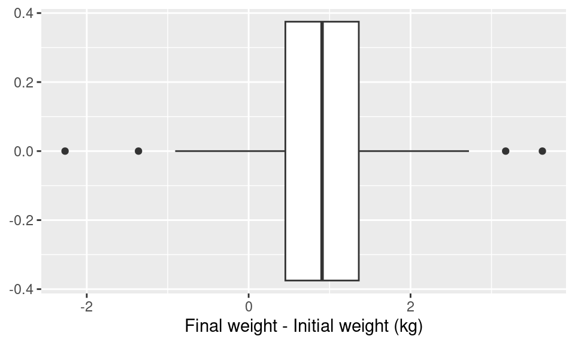
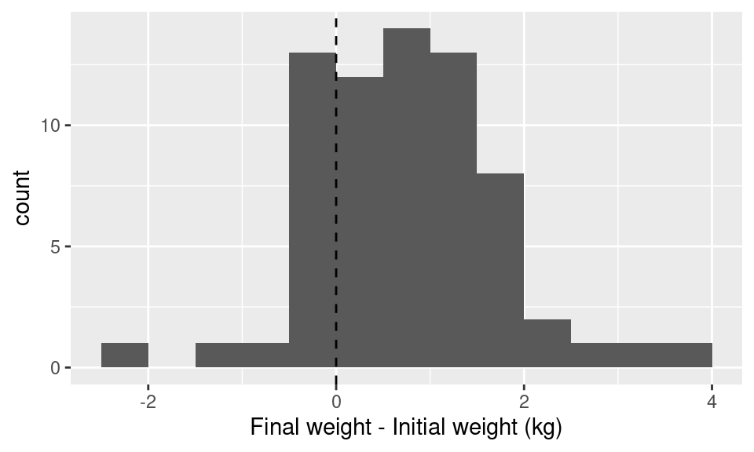
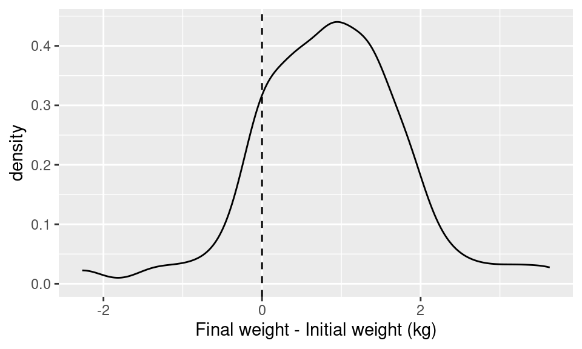
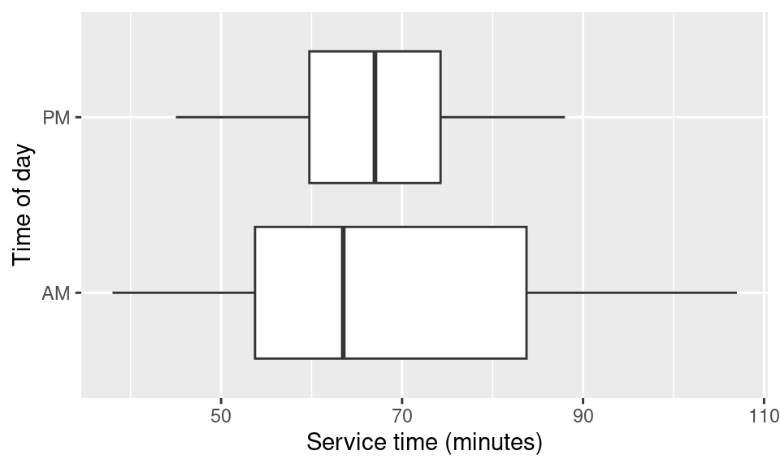
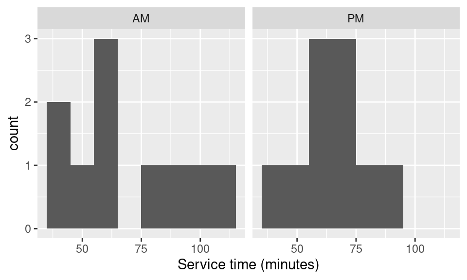
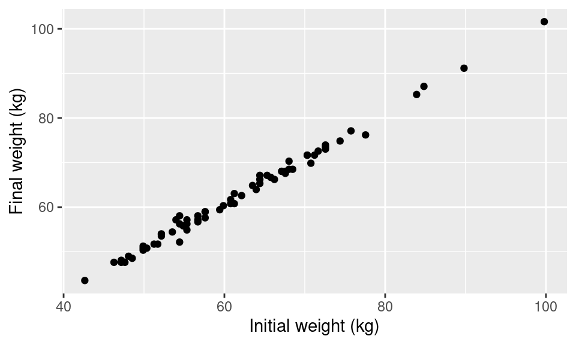
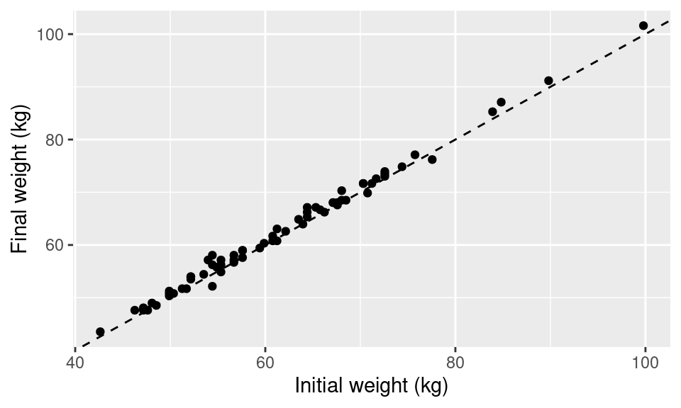
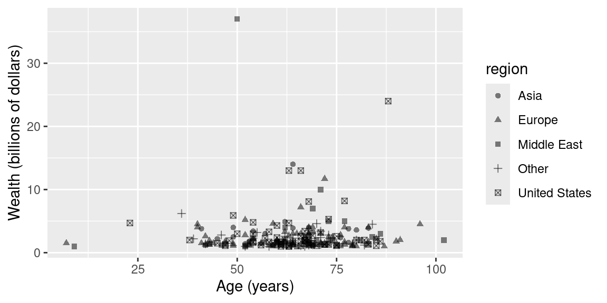

MATH1024: Introduction to Probability and Statistics
Chapter 1 Introduction to Statistics
1.1 What is statistics?
1.1.1 Early and modern definitions
The word statistics has its roots in the Latin word status which means the state, and in the middle of the 18th century was intended to mean collection, processing and use of data by the state. With the rapid industrialisation of Europe in the first half of the 19th century, statistics became established as a discipline. This led to the formation of the Royal Statistical Society, the premier professional association of statisticians in the UK and also world-wide, in 1834. During this 19th century growth period, statistics acquired a new meaning as the interpretation of data or methods of extracting information from data for decision making. Thus statistics has its modern meaning as the methods for collection, analysis and interpretation of data. Indeed, the Oxford English Dictionary defines statistics as
The practice or science of collecting and analysing numerical data in large quantities, especially for the purpose of inferring proportions in a whole from those in a representative sample.
Note that the word ‘state’ has gone from its definition. Instead, statistical methods are now essential for everyone wanting to answer questions using data.
For example, will it rain tomorrow? Is smoking harmful during pregnancy? What degree classification will I get at graduation? Will the stock market crash tomorrow?
1.1.2 Statistics tames uncertainty
We often have to make decisions under uncertainty. It is useful for us to know the extent of uncertainty, which allows us to minimise the frequency of wrong decisions, or which minimises the loss due to wrong decisions.
Thus we have the equation \[\text{Uncertain knowledge} + \text{Knowledge of the extent of uncertainty in it} = \text{Usable knowledge.}\]
1.1.3 Why should I study statistics as part of my degree?
Studying statistics will equip you with the basic skills in data analysis and doing science with data. A decent level of statistical knowledge is required no matter what branch of mathematics, engineering, science and social science you will be studying. Learning statistical theories gives you the opportunity to practice your deductive mathematical skills on real life problems. In this way, you will improve at mathematical methods while studying statistical methods.
All knowledge is, in final analysis, history.
All sciences are, in the abstract, mathematics.
All judgements are, in their rationale, statistics.
– Prof. C. R. Rao
1.1.4 Lies, Damn Lies and Statistics?
Sometimes people say, “you can prove anything in statistics!” and many such jokes. Such remarks bear testimony to the fact that often statistics and statistical methods are mis-quoted without proper verification and robust justification. This is even more important in recent years of the global pandemic when every day we have been showered with a deluge of numbers.
Statistics can be very much mis-used and mis-interpreted, and as statisticians it is our duty to correctly apply statistical techniques to develop scientifically robust and strong arguments. In particular, we need to be careful about what assumptions we make.
1.1.5 What’s in this module?
- Chapter 1: We will start with the basic statistics used in everyday life, e.g. mean, median, mode, standard deviation, etc. Statistical analysis and report writing will be discussed. We will also learn how to explore data using graphical methods. We will introduce the R programming language to help us with these tasks.
- Chapter 2: Introduction to Probability. We will define and interpret probability as a measure of uncertainty. We will learn the rules of probability and then explore examples.
- Chapter 3: Probability Distributions. We will learn about lots of probability distributions, which can be used to model the outcomes of different types of events.
- Chapter 4: Statistical Inference. We will discuss basic ideas of statistical inference, including techniques of point and interval estimation and hypothesis testing.
1.2 Example data sets
In this module, we will assume that we have data from \(n\) randomly selected sampling units, which we will conveniently denote by \(x_1, x_2, \dots, x_n\). We will assume that these values are numeric, either discrete like counts, e.g. number of road accidents, or continuous, e.g. heights of 4-year-olds, marks obtained in an examination.
We will use the following examples to demonstrate ideas throughout the module:
Example 1.1 (Fast food service time) This dataset contains the service times (in seconds) of customers at a fast-food restaurant. The first row is for customers who were served from 9–10am and the second row is for customers who who were served from 2–3pm on the same day.
| AM | 38 | 100 | 64 | 43 | 63 | 59 | 107 | 52 | 86 | 77 |
| PM | 45 | 62 | 52 | 72 | 81 | 88 | 64 | 75 | 59 | 70 |
We would like to compare these AM and PM service times.
Example 1.2 (Computer failures) This dataset contains weekly failures of a university computer system over a period of two years.
4 0 0 0 3 2 0 0 6 7 6 2 1 11 6 1 2 1 1 2 0 2 2 1 0 12 8 4 5 0 5 4 1 0 8 2 5 2 1
12 8 9 10 17 2 3 4 8 1 2 5 1 2 2 3 1 2 0 2 1 6 3 3 6 11 10 4 3 0 2 4 2 1 5 3 3
2 5 3 4 1 3 6 4 4 5 2 10 4 1 5 6 9 7 3 1 3 0 2 2 1 4 2 13We would like to summarise this data and make predictions about future failures.
Example 1.3 (Weight gain) Is it true that students tend to gain weight during their first year in college? Cornell Professor of Nutrition, David Levitsky, recruited students from two large sections of an introductory health course. Although they were volunteers, they appeared to match the rest of the class in terms of demographic variables such as sex and ethnicity. 68 students were weighed during the first week of the semester, then again 12 weeks later. The first 10 rows of the data are:
| Student number | Initial weight (kg) | Final weight (kg) |
|---|---|---|
| 1 | 77.56423 | 76.20346 |
| 2 | 49.89512 | 50.34871 |
| 3 | 60.78133 | 61.68851 |
| 4 | 52.16308 | 53.97745 |
| 5 | 68.03880 | 70.30676 |
| 6 | 47.17357 | 48.08075 |
| 7 | 64.41006 | 67.13162 |
| 8 | 54.43104 | 56.24541 |
| 9 | 65.31725 | 67.13162 |
| 10 | 70.76035 | 69.85317 |
We would like to explore the data graphically and to test whether the data support the hypothesis that students gain weight during their first year in college.
Example 1.4 (Billionaires) Fortune magazine publishes a list of the world’s billionaires each year. The 1992 list includes 225 individuals. Their wealth, age, and geographic location (Asia, Europe, Middle East, United States, and Other) are reported.
The variables in the data are:
wealth: Wealth of family or individual in billions of dollarsage: Age in years (for families it is the maximum age of family members)region: Region of the World (Asia, Europe, Middle East, United States and Other).
The first 10 rows of the data are:
| wealth | age | region |
|---|---|---|
| 37.0 | 50 | Middle East |
| 24.0 | 88 | United States |
| 14.0 | 64 | Asia |
| 13.0 | 63 | United States |
| 13.0 | 66 | United States |
| 11.7 | 72 | Europe |
| 10.0 | 71 | Middle East |
| 8.2 | 77 | United States |
| 8.1 | 68 | United States |
| 7.2 | 66 | Europe |
We will investigate differences in wealth of billionaires by age and region using many exploratory graphical tools and statistical methods.
1.3 Introduction to R
R is a programming language for statistics. We will use R as a calculator, to summarise data, make exploratory plots, perform statistical analysis, illustrate theorems and calculate probabilities. You will get practice of using R yourself during the computer practical sessions.
R is freely available to download: search “download R” or go to: https://cran.r-project.org/. We will access R via the RStudio integrated development environment, which you can download from https://posit.co/download/rstudio-desktop/ which provides a nice editor for R code alongside a console. Details about using R and RStudio are given in the the practical sessions. If you want to complete the practical sessions on your own computer, please try to install R and RStudio before attending the practical sessions.
We will not give details of using R in these notes: this will all be covered by the practical sessions. In the notes, we provide simple commands used to calculate useful quantities in R, and show some of the graphical outputs we can get from R.
1.4 Summarising data sets
1.4.1 Summarising categorical data
We can summarise categorical (not numeric) data by tables. For example, we could summarise the results of 20 coin tosses as: 12 heads, 8 tails.
For the computer failure data (Example 1.2) we may summarise the count of failures per week:| 0 | 1 | 2 | 3 | 4 | 5 | 6 | 7 | 8 | 9 | 10 | 11 | 12 | 13 | 17 |
|---|---|---|---|---|---|---|---|---|---|---|---|---|---|---|
| 12 | 16 | 21 | 12 | 11 | 8 | 7 | 2 | 4 | 2 | 3 | 2 | 2 | 1 | 1 |
1.4.2 Measures of location
1.4.2.1 Choosing a representative value for the data
We are seeking a representative value for the data \(x_1, x_2, \dots, x_n\) which should be a function of the data. If \(a\) is that representative value then how much error is associated with it? The total error could be the sum of squares of the errors, \[\text{SSE}(a) = \sum_{i=1}^n (x_i - a)^2\] or the sum of the absolute errors \[\text{SAE}(a) = \sum_{i=1}^n |x_i - a|.\] What value of \(a\) will minimise the SSE or the SAE? For SSE the answer is the sample mean and for SAE the answer is the sample median.
1.4.2.2 The sample mean
The sample mean is \[\bar x = \frac{1}{n} (x_1 + x_2 + \dots + x_n) = \frac{1}{n} \sum_{i=1}^n x_i.\] For the service time data from Example 1.1, the AM mean time is 68.9 seconds and the PM mean time is 66.8 seconds.
Theorem 1.1 The sample mean \(\bar x\) minimises the SSE.
Proof. We have \[\begin{align*} \text{SSE}(a) &= \sum_{i=1}^{n}\left(x_{i}-a\right)^{2} \\ &=\sum_{i=1}^{n}\left(x_{i}-\bar{x}+\bar{x}-a\right)^{2} \quad \text{(Add and subtract $\bar{x}$)} \\ &=\sum_{i=1}^{n}\left\{\left(x_{i}-\bar{x}\right)^{2}+2\left(x_{i}-\bar{x}\right)(\bar{x}-a)+(\bar{x}-a)^{2}\right\} \\ &=\sum_{i=1}^{n}\left(x_{i}-\bar{x}\right)^{2}+2(\bar{x}-a) \sum_{i=1}^{n}\left(x_{i}-\bar{x}\right)+\sum_{i=1}^{n}(\bar{x}-a)^{2} \\ &=\sum_{i=1}^{n}\left(x_{i}-\bar{x}\right)^{2}+n(\bar{x}-a)^{2}, \end{align*}\] since \(\sum_{i=1}^{n}\left(x_{i}-\bar{x}\right)=n \bar{x}-n \bar{x}=0\).
The first term is free of \(a\) and the second term is non-negative for any value of \(a\). Hence the minimum occurs when the second term is zero, i.e. when \(a = \bar x\).
We have established the fact that the sum of (or mean) squares of the deviations from any number \(a\) is minimised when \(a\) is the mean. This justifies why we often use the mean as a representative value.
1.4.2.3 The sample median
The sample median is the middle value in the ordered list of observations \(x_{(1)} \leq x_{(2)} \leq \dots \leq x_{(n)}\). For the AM service time data \[38 < 43 < 52 < 59 < 63 < 64 < 77 < 86 < 100 < 107.\] If \(n\) is odd, there is a unique middle value. If \(n\) is even, there are two middle values (63 and 64 for the AM service time data). Any value between those two middle values is a sample median. By convention, we often use the mean of these values (63.5 for the the AM service time data).
Theorem 1.2 The sample median minimises the SAE.
Proof. If \(a<x_{(1)}\), then \[\begin{equation} \text{SAE}(a) = \sum_{i=1}^n (x_i - a). \tag{1.1} \end{equation}\] As \(a\) increases, each term of (1.1) decreases until \(a\) reaches \(x_{(1)}\), so \(\text{SAE} (x_{(1)})< \text{SAE}(a)\) for all \(a<x_{(1)}\). We conclude the minimiser of the SAE is at least \(x_{(1)}\).
Now suppose \(x_{(k)} \leq a < x_{(k+1)}\). Then \[\begin{align*} \text{SAE}(a) &= \sum_{i=1}^k (a - x_{(i)}) + \sum_{i={k+1}}^n (x_{(i)} - a) \\ &= (2k - n) a - \sum_{i=1}^k x_{(i)} + \sum_{i={k+1}}^n x_{(i)}. \end{align*}\]
The term \(- \sum_{i=1}^k x_{(i)} + \sum_{i={k+1}}^n x_{(i)}\) is constant for each any \(a\) in the interval \([x_{(k)}, x_{(k+1)})\). So the SAE in this interval is a straight line, with slope \(2k - n\). This slope is negative if \(k < \frac{n}{2}\), zero if \(k = \frac{n}{2}\), and positive if \(k>\frac{n}{2}\).
For each \(k < \frac{n}{2}\), the SAE is decreasing in the interval \([x_{(k)}, x_{(k+1)})\), and we conclude the minimiser of the SAE is at least \(x_{(k+1)}\). Starting at \(k = 1\), we continue increasing \(k\) by one and concluding the the minimiser of the SAE is at least \(x_{(k+1)}\), until we reach a \(k\) such that \(k \geq \frac{n}{2}\):
- If \(n\) is odd, this happens at \(k = \frac{n+1}{2}\). In that case, since \(k > \frac{n}{2}\), the SAE is increasing in the interval \([x_{(k)}, x_{(k+1)})\), so we conclude the SAE is minimised at \(x_{(k)} = x_{\left(\frac{n+1}{2}\right)}\), the median point.
- If \(n\) is even, this happens at \(k = \frac{n}{2}\). In that case the SAE is constant in the interval \([x_{(k)}, x_{(k+1)})\), so we conclude that the SAE is minimised at any \(a\) between the two middle points \(x_{\left(\frac{n}{2}\right)}\) and \(x_{\left(\frac{n}{2}+1\right)}\), i.e. any median point.
We have established the fact that the sum of (or mean) of the absolute deviations from any number \(a\) is minimised when \(a\) is the median. This justifies why median is also often used as a representative value.
The mean gets more affected by extreme observations than the median. For example for the AM service times, suppose the next observation is 190. The median will be 64 instead of 63.5 but the mean will shoot up to 79.9.
1.4.2.4 The sample mode
The mode or the most frequent (or the most likely) value in the data is taken as the most representative value if we consider a 0-1 error function instead of the SAE or SSE above. Here, one assumes that the error is 0 if our guess \(a\) is the correct answer and 1 if it is not. It can then be proved that the best guess \(a\) will be the mode of the data.
1.4.3 Measures of spread
A quick measure of the spread is the range, which is defined as the difference between the maximum and minimum observations. For the AM service times the range is \(69\) (\(107 - 38\)) seconds.
The variance is \[\frac{1}{n-1} \sum_{i=1}^{n}\left(x_{i}-\bar{x}\right)^{2}.\] We have \[\sum_{i=1}^{n}\left(x_{i}-\bar{x}\right)^{2}=\sum_{i=1}^{n}\left(x_{i}^{2}-2 x_{i} \bar{x}+\bar{x}^{2}\right)=\sum_{i=1}^{n} x_{i}^{2}-2 \bar{x}(n \bar{x})+n \bar{x}^{2}=\sum_{i=1}^{n} x_{i}^{2}-n \bar{x}^{2},\] so we calculate variance as \[ \operatorname{Var}(x)=\frac{1}{n-1}\left(\sum_{i=1}^{n} x_{i}^{2}-n \bar{x}^{2}\right). \] Sometimes the variance is defined with the divisor \(n\) instead of \(n - 1\). We have chosen \(n - 1\) since this is the default in R. We will return to this in Chapter 4.
The standard deviation (sd) is the square root of variance \[s = \operatorname{sd}(x) = \sqrt{\operatorname{Var}(x)}.\] The standard deviation for the AM service times is 23.2 seconds. Note that it has the same unit as the observations.
The interquartile range (IQR) is the difference between the third, \(Q_3\) and first, \(Q_1\) quartiles, which are respectively the observations ranked \(\frac{1}{4}(3n + 1)\) and \(\frac{1}{4}(n + 3)\) in the ordered list. Note that the median is the second quartile, \(Q_2\). When \(n\) is even, definitions of \(Q_3\) and \(Q_1\) are similar to that of the median, \(Q_2\). The IQR for the AM service times is \(83.75 - 53.75 = 30\) seconds.
1.4.4 Summarising data in R
We can calculate the mean, median, variance and standard deviation very easily in R.
As an example, suppose we have stored the
weekly counts of computer failures from Example 1.2
in an object called compfail in R. You will
find out how to read the data into R in the practical sessions.
Then we can calculate these quantities with:
mean(compfail)## [1] 3.75median(compfail)## [1] 3var(compfail)## [1] 11.43204sd(compfail)## [1] 3.38113R saves us a lot of effort here relative to computing these quantities by hand.
The summary command provides several using summary statistics:
summary(compfail)## Min. 1st Qu. Median Mean 3rd Qu. Max.
## 0.00 1.00 3.00 3.75 5.00 17.00We can find a table summarising the counts by typing
table(compfail)## compfail
## 0 1 2 3 4 5 6 7 8 9 10 11 12 13 17
## 12 16 21 12 11 8 7 2 4 2 3 2 2 1 11.5 Exploratory data plots
1.5.1 Introduction
Often the clearest way to generate insight is to plot the data. Plots may be used to check the shape of the distribution of a variable, and to investigate the relationship between different variables in a dataset.
The type of plot which is most appropriate depends on whether we are looking at the distribution of a single variables or the relationship between two or more variables, and on whether the variables of interest are discrete or continuous.
Here, we will show some plots produced by R. You will find out how to make these plots in R in the practical sessions.
1.5.2 Distribution of a single discrete variable
To explore the distribution of a single discrete variable, we may use a bar plot. For instance, we may plot the weekly counts of computer failures from Example 1.2:

This plot shows the same information as in the summary table of counts, but it is easier to process the information visually.
1.5.3 Distribution of a single continuous variable
There are several different types of plots which may be used to summarise the shape of the distribution of a single continuous variables. For instance, suppose we are interested in the gain in weight in Example 1.3.
We can use a box-and-whiskers plot to summarise the distribution of the weight difference:

The line in the middle of the box is the median service weight difference, and the box runs from the first quartile to the third quartile. The lines (or whiskers) extend from the smallest value no further further than \(1.5 \times \text{IQR}\) from the first quartile to the largest value no further than \(1.5 \times \text{IQR}\) from the third quartile.
Any outliers, which are outside the range of the whiskers, are shown as separate points.
We can see the the majority of students in the sample do gain weight over the course of the study.
To get more information about the shape of the distribution, we could plot a histogram of the weight difference:

The histogram splits the \(x\)-axis into small intervals or “bins” (here each of width 0.5), and counts how many times the variable (here difference in weight) is in each bin. Histograms often look very different for different bin widths.
Alternatively, we could draw a density plot:

This plots an estimate of the probability density function, which we will learn about in Chapter 3.
1.5.4 Relationship between continuous and discrete variables
We can also use a box-and-whiskers plot to show how a continuous variable changes with a discrete one. For instance, for the service time data from Example 1.1, we are interested in how AM and PM service times compare:

Since no outlying points are shown in this case, the whiskers show the range of the data.
We see that the AM service times are on average shorter, but also more spread out than the PM service times.
We can also use any of the other methods for plotting a single continuous variable, and draw separate plots for each group in the discrete variable.
We can use histograms:

Or density plots:

We could also plot the densities for the different groups on a single plot, using line type to distinguish between the groups:

1.5.5 Relationship between two continuous variables
A scatter-plot is a good way to look at the relationship between two continuous variables. For instance, for the weight data from Example 1.3, we can plot the final weights against the initial weights:

We can add the straight line \(y = x\) to the plot:

We can see that the majority of the points lie above this \(y = x\) line, so the majority of students in the sample gain weight over the course of the study, as we have seen before. This appears to be the case irrespective of the initial weight of the student.
1.5.6 Relationships between more than two variables
We can combine the methods we have already seen to plot relationships between more than two variables.
For instance, in the billionaires data in Example 1.4, we can plot wealth against age as a scatter-plot, using the shape of the points to distinguish between different regions:

The plot lets us immediately read off some interesting aspects of the data. For instance, there were a few very young billionaires, the richest person in the world at this time was age 50 and from the Middle East, and the richest few people in the world had wealth many times higher than most people on the list.